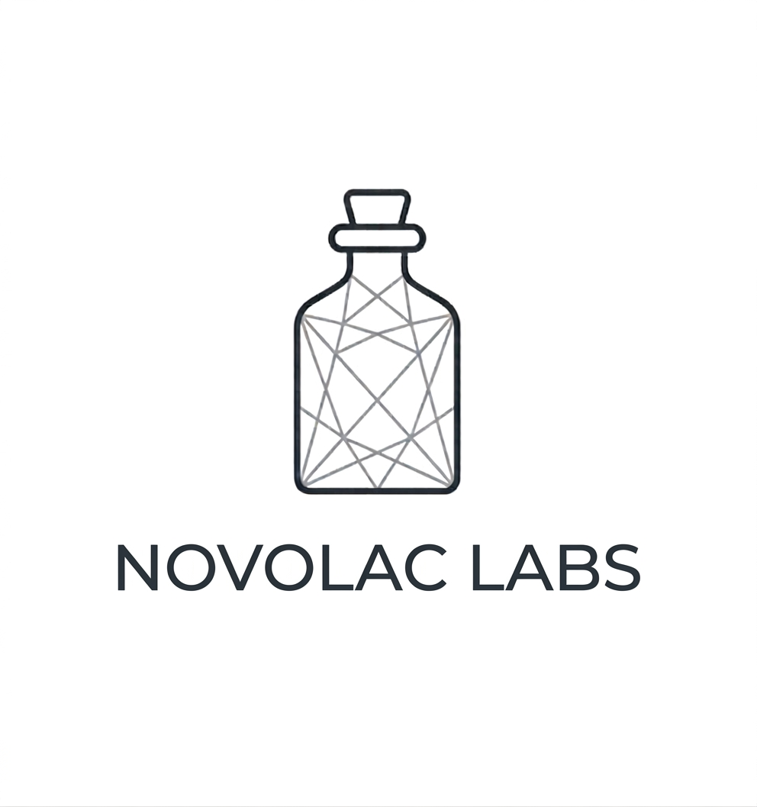

Intelligent, local signal interpretation. Built for absolute privacy and remarkable speed.
The Goal
Every single day, millions of diagnostic waveforms—like ECGs and Echocardiograms—are printed or saved as flat, static visual files. To standard software, these files are just pixels. Important clinical data hidden in subtle, microscopic peaks can easily be overlooked.
Our mission is simple. We are building a lightweight, local vision-language AI that reads medical charts with the same careful precision as a human physician. Lattix interprets visual anomalies, tracks structural changes, and converts complex wave signals into clear, actionable analysis.
The Architecture
To achieve extreme accuracy without needing massive, expensive data centers, we re-engineered how raw data is handled. By using strict color isolation and mathematical coordinate curves, we turned messy images into ultra-sharp, pure 1.5-pixel signal maps.
We pack this dataset into a zero-overhead binary format that loads instantly into the computer's memory. Instead of forcing the hardware to run at full capacity, we fine-tune specific reasoning pathways inside the neural network. This allows the model to learn deeply while keeping the processor cool and stable.
Where things stand
Signal Enhancement
Slide to compare our original raw waveform scan with the processed 1.5-pixel mathematical coordinate curve. Lattix successfully isolates critical diagnostic markers and removes noise for highly precise offline analysis.